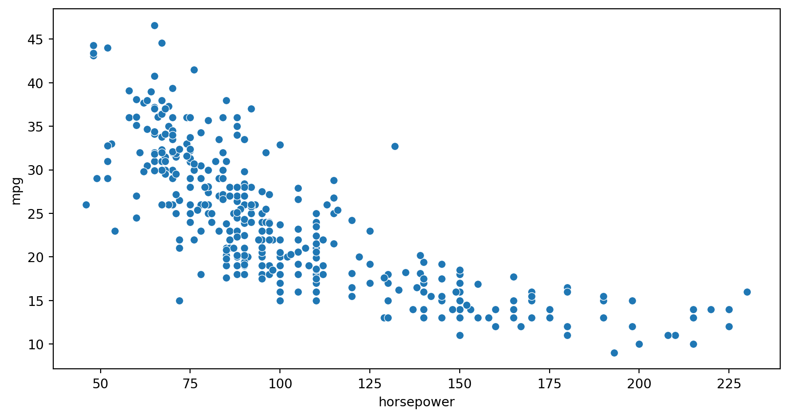
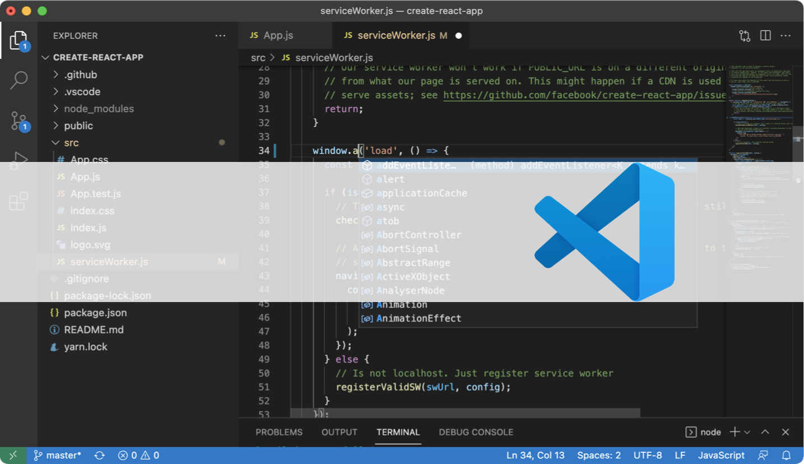

import seaborn as sns
import matplotlib.pyplot as plt
mpg = sns.load_dataset("mpg")
sns.scatterplot(data=mpg, x="horsepower", y="mpg")
plt.show()
Quarto es un sistema abierto de
publicación científica y técnica
el objetivo es hacer que el proceso de creación
y colaboración sea drásticamente mejor


quarto check en la terminal


Compartir: Un mismo .qmd genera HTML, PDF, slides o sitios web, pasando de lo estático a lo interactivo.

Colaborar: Con un archivo sencillo ya se puede crear y publicar material reproducible, iniciando el trabajo en equipo.

Enseñar: Sus features integran texto, código y visualizaciones, mejorando la enseñanza con recursos dinámicos.

Reimaginar: Tecnologías como WebR, Pyodide o Shiny abren nuevas formas de aprender e innovar en educación.
Documentación oficial
🔗 quarto.org
Guías y ejemplos prácticos para comenzar de inmediato.
Aprendizaje en video
🔗 Crash Course en YouTube
Introducción práctica a Quarto y sus distintos usos.

Recursos de la comunidad
🔗 Mine Cetinkaya-Rundel
Cursos, libros y presentaciones en Quarto en GitHub.
Aplicaciones en educación
🔗 sethnut.com/resources
Olimpiada Matemática, Verano Matemático, EMMA y más!